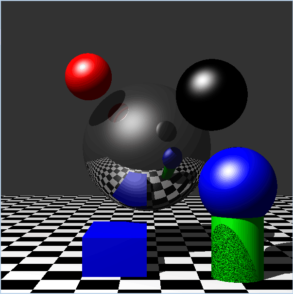
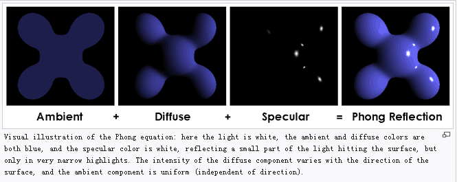
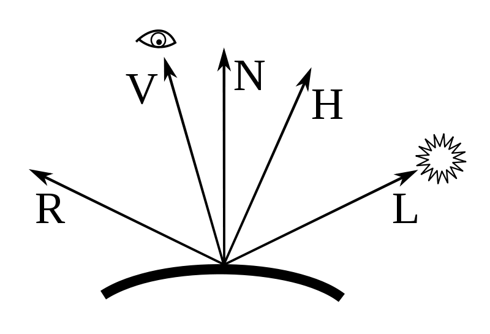

Phong Illumination Model

1:The final effect of the Phong Model consists of three parts:Ambient,Diffuse,Specular
1.1: Ka,which is an ambient reflection constant, the ratio of reflection of the ambient term present in all points in the scene rendered, and
a, which is a shininess constant for this material, which is larger for surfaces that are smoother and more mirror-like. When this constant is large the specular highlight is small.
1.2:Kd,which is a diffuse reflection constant, the ratio of reflection of the diffuse term of incoming light (Lambertian reflectance)
1.3:Ks,which is a specular reflection constant, the ratio of reflection of the specular term of incoming light,

1:N:The Normal line
2:V:The location of Observer
3:N:The Angular bisector between N and H
4:L:The light source
5:R:The reflective light of the light source
The introduction of the fuction of the each headfiles
(Each headfiles just define the methods need to be implemented and the parameter of each methods.It also define the members and the relationship with other headfiles.However,it doesn't give the implementation of each methods.)
1:Sphere.h:define the color(call color.h),the radius and the location of the sphere.Especially,it defines the intersection of the Sphere with other vectors.
2:Color.h:Firstly,it defines some basic color(BLACK,WHITE,BLUE...).Secondly,it defines the methods such as combination,scale color.Especially,it deals with the Phong Illumination model by using the expressions
3:Cylinder.h:
3.1:Cylinder's intersection method, The input is a ray (pos, dir).
3.2:Cylinder's Normal method,Return the unit normal vector at a given point
4:Object.h:the higher level compared with Sphere.h,Color.h,,Cylinder.h,because it call the method in them.Especially,it doesn't define other methods
5:Plane.h:
5.1:bool IsInside(Vector q):Test if an input point is within the quad.
5.2:float Plane::intersect(Vector pos, Vector dir):compute the paramter t at the point of intersection.
5.3: Vector Plane::normal(Vector pos):to compute the unit normal vector
6:Vector.h:It only defines various of operation of the vectors
7:TextureBMP.h:It defines the input and output of the images
The introduction of the fuction of the cpp files:They implement the method defined in the headfiles.